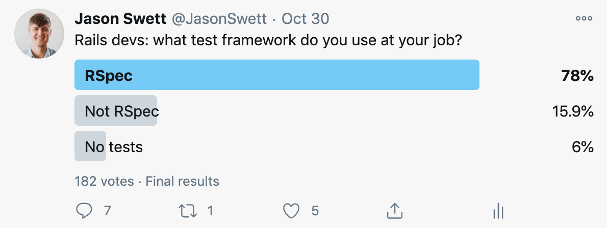

Test d'intégration : teste l'intégration de plusieurs fonctions
Structure d'un test
Setup
Execution
Expectation
Tester une application Rails
Framework de test : RSpec
describe Person do
describe "#full_name" do
it "returns the first and last names concatenated" do
person = Person.new(first_name: "John", last_name: "Murphy")
expect(person.full_name).to eq "John Murphy"
end
end
end
Comparaison avec Minitest
class TestPerson < Minitest::Test
def setup
@person = Person.new(first_name: "John", last_name: "Murphy")
end
def test_full_name
assert_equal @person.full_name, "John Murphy"
end
end

Tests de modèle : Shoulda Matchers
RSpec.describe User, type: :model do
it { should belong_to(:organisation) }
it { should validate_presence_of(:name) }
it { should validate_presence_of(:email) }
it { should validate_uniqueness_of(:email) }
end
Tests de feature : Capybara
RSpec.feature 'Users', type: :feature do
describe 'Sign up' do
it 'should create a user and an organisation' do
visit new_user_registration_path
fill_in 'Organisation', with: 'Coca-Cola'
fill_in 'Name', with: 'John Murphy'
fill_in 'Email', with: 'john@coca-cola.com'
fill_in 'Password', with: 'password'
fill_in 'Password confirmation', with: 'password'
expect { click_button 'Sign up' }.to change { User.count }.by(1)
.and change { Organisation.count }.by(1)
end
end
end
Tests de requête
RSpec.describe "Users", type: :request do
describe "GET users#index" do
it "gets all users" do
2.times { create(:user) }
get '/api/v1/users'
expect(response).to have_http_status(200)
json = JSON.parse(response.body)
expect(json[:users].length).to eq 2
end
end
end
RSpec.describe "Users", type: :request do
describe "POST users#create" do
it 'create user and organisation' do
user_params = { user: {
name: 'John Murphy',
organisation: 'Coca-Cola'
password: 'password',
email: 'john@coca-cola.com'
}}
expect do
post '/api/v1/users', params: user_params.to_json, headers: headers
end.to change { User.count }.by(1)
.and change { Organisation.count }.by(1)
expect(response).to have_http_status(201)
end
end
end
Création d'objets : FactoryBot
FactoryBot.define do
factory :user do
name { 'John' }
sequence(:email) { |n| "user#{n}@example.com" }
password { 'password' }
password_confirmation { 'password' }
association :organisation
end
end
user = create(:user, email: 'john.example.com')
user = build(:user, email: 'john.example.com')
Setup
group :development, :test do
gem 'rspec-rails'
gem 'shoulda-matchers'
gem 'capybara'
gem 'factory_bot_rails'
end
Maintenabilité / scalabilité
Tester en isolation
Chaque test doit être indépendant.
Suite en ordre aléatoire : défaut de RSpec
Pas de contact avec une API extérieure (stubs/mocks)
Limiter l'usage de la base de données aux tests d'intégration (feature/request)
Ne tester que le nécessaire (le plus complexe)
Un bon test doit être :
facile à écrire
facile à lire
fiable
rapide
Test Driven Development
Bonus setup : Guard
group :development do
gem 'guard-rspec', require: false
end